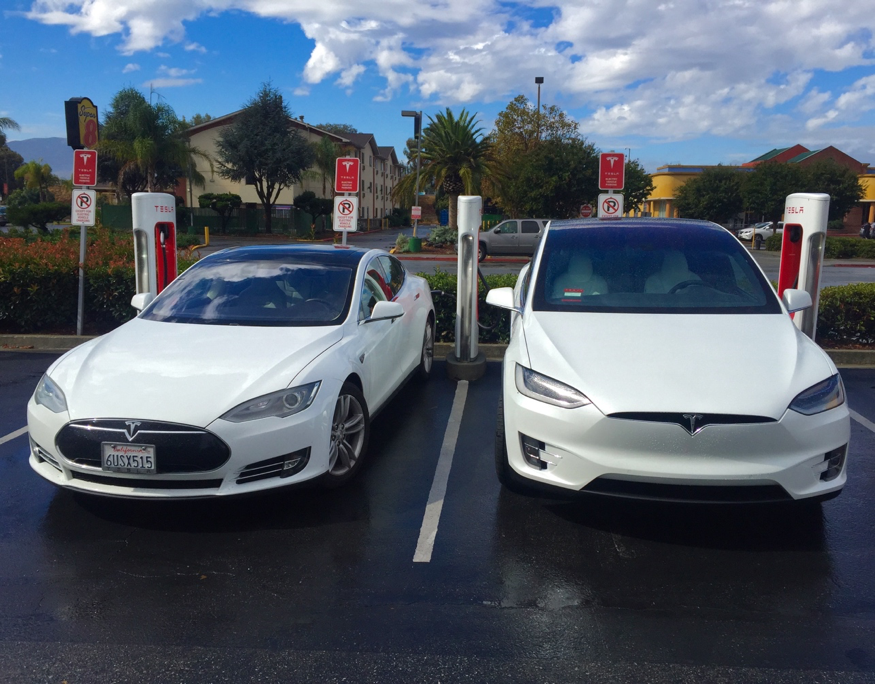

The Bugatti Grand Sport been the fastest car in the world and runs on 16-cylinder engine it gets to 60 mph in 2.5 seconds. Imagine a car that runs on a battery and gets you to 60 in 2.8 seconds, well that's what Tesla has done with their Model S. The Model S an 85 kWh microprocessor controlled lithium-ion battery can get you to 60 in 2.8 seconds. But the question I'm asking is how good are hybrids for the environment, specifically Tesla?

Tesla Model S(Left) and Model X(Right) at a Supercharger Station
Tesla did not only make this car just to make it. Tesla is combating fuel running engine cars that are hurting or ecosystem. Automobiles, according to the U.S Environmental Protection Agency, are responsible for more than half of the pollution in this nation.
An interview with Kevin Mawhinney, an Inside Sales Advisor, at Tesla, was asked in an interview conducted by me, I asked him how important are zero emissions to Tesla?
Mawhinney response was: "Zero emissions is our number one concern. Our mission as a company is to accelerate the world's transition to renewable energy."
Car's that run on fuel are responsible for polluting more than 50% of our nation's air. Zero emissions have been Tesla number one concern, and they showed this by them making cars that don't pollute our air.
Tesla number one sold car is the P90-D. Is a car that not only delivers performances but helps our eco-system, some may say why not purchase a Prius or Chevy Bolt? I asked Mawhinney that question, he replied: Tesla differs greatly from these vehicles. First, Tesla is the first electric vehicle built from the ground up to be an electric vehicle, our acceleration is in the class of Ferrari’s and Bugatti's and our safety ratings are unprecedented. We broke some of the machinery they used to crush the cars previously recorded as the safest vehicles on the road. Aside from all of this our vehicle is the most technologically advanced car on the road and has the ability to drive itself.
John M. Broder from the New York Times conducted an experiment to see how efficient Tesla vehicles are. He made a road trip to different parts of the east coast. He started his road trip on a good foot until he arrived in New Jersey he notices the car was not made to handle cold weather. This experiment John conducted shows one of the issues why people won't buy an electric car.
A lot of people would say electric cars are not reliable since it's an electric car and it can leave you stranded. I asked Mawhinney how more efficient is Tesla electric motor than other vehicles? Mawhinney replied: Our cars are more reliable that any combustion engine and we have a fraction the amount of moving parts prone to breaking. If you can find a plug, you can charge your vehicle, if you get in a car accident you have the highest probability of living out of any vehicle ever made in the world, period."
Tesla has come a long way since 2003, from their roadster to their best selling car the Model S. Not only Tesla has come a long way but electric car in general. One of the last question I asked Kevin was if he think electric cars, will replace fuel cars? Kevin stated "I believe they will replace traditional cars within the next decade."
Electric cars are the future of the auto industry. Do you think electric vehicles will ever replace fuel running vehicles?